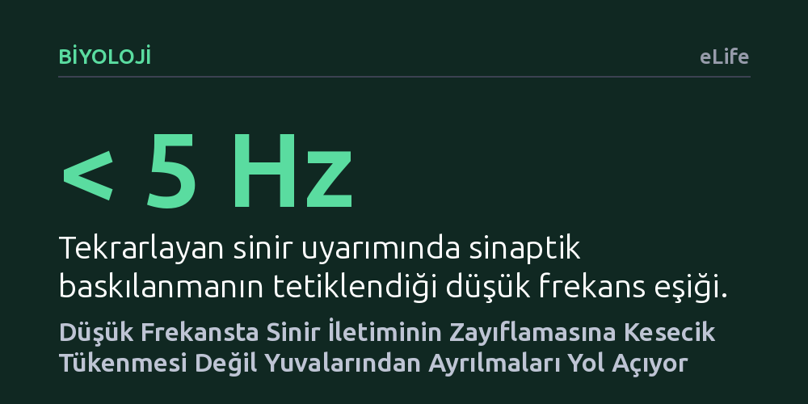

BIYOLOJI · eLife · 2026-10-15
Araştırmacılar, düşük frekansta tekrarlanan uyarımın sinir kavşaklarındaki iletimi neden zayıflattığını tekil aktif bölgelerdeki kesecikleri sayarak inceledi. Güç kaybının sanılanın aksine kesecik tükenmesinden değil, salım noktalarına bağlı keseciklerin yuvalarından geri çözülüp ayrılmasından kaynaklandığı bulundu.
Beyindeki sinir iletiminin zayıflamasının yakıt tükenmesinden değil, keseciklerin yuvalarından geri ayrılmasından kaynaklandığını göstererek sinapsların bilgi işleme mantığına dair temel kabulü değiştiriyor.

Sinir hücrelerimiz birbirleriyle sinaps adı verilen mikroskobik bağlantı noktaları üzerinden haberleşir. Bir sinir hücresinden gelen elektriksel sinyal, sinir ucunda depolanan ve nörotransmiter adı verilen kimyasal habercileri taşıyan keseciklerin hücre zarına kaynaşarak boşalmasıyla diğer hücreye iletilir. Yıllardır nörobiyolojide kabul gören genel kanı, sinapsların peş peşe uyarıldığında zayıflamasının (sinaptik baskılanma) basit bir tükenme süreci olduğuydu. Yani elde hazır bekleyen kesecikler harcandıkça, yenileri yerlerine yerleşene kadar iletim gücü düşüyordu.
Ne var ki bu klasik tükenme hipotezi önemli bir noktada tıkanıyordu: Eğer sinaps saniyede beş kereden daha seyrek (örneğin 1-2 Hz gibi düşük frekansta) uyarılıyorsa, iki uyarı arasındaki süre kesecik deposunun yeniden dolması için fazlasıyla yeterli olmalıydı. Dolayısıyla düşük frekansta belirgin bir zayıflama görülmemesi gerekirdi. Oysa memeli beynindeki pek çok sinapsta, saniyede bir iki uyarımda bile iletimin belirgin şekilde zayıfladığı gözlemleniyordu. Araştırmacılar uzun süredir cevapsız kalan bu paradoksun ardındaki asıl mekanizmayı aydınlatmak için yola çıktı.
Bilim insanları bu soruyu yanıtlamak için ortalama sinaps tepkilerine bakmak yerine, doğrudan tekil aktif bölgelerde—keseciklerin salındığı özelleşmiş mikro alanlarda—gerçekleşen olayları inceledi. Her bir uyarımda kaç adet sinaptik keseciğin salındığını tek tek sayarak salıma hazır kesecik havuzunun büyüklüğünü ve bu havuzun kendini yenileme hızını doğrudan ölçtüler.
Deneylerde sinir uçlarına farklı frekanslarda elektriksel uyarımlar verildi ve ardından sinapsın toparlanma dinamikleri izlendi. Araştırmacılar, düşük frekanslı uyarım serilerinin ardından tekil uyarılar vererek veya çiftli uyarım darbeleri uygulayarak sistemin nasıl tepki verdiğini test etti. Elde edilen deneysel ölçümler, kesecik hareketlerini adım adım açıklayan biyofiziksel bir modelle birleştirildi.
Deneylerin en çarpıcı sonucu, düşük frekanslı zayıflamanın önceki kesecik tüketimine bağlı olmamasıydı. Yani sinapsın zayıflaması, keseciklerin salınıp deponun boşalmasından kaynaklanmıyordu; hiç salım yapmamış kesecikler dahi uyarım sonrasında işlevsizleşebiliyordu. Ölçümler, düşük frekansta oluşan bu baskılanmanın tekil uyarılarla onlarca saniye boyunca toparlanamadığını, ancak hemen ardından uygulanan yüksek frekanslı bir uyarım dizisiyle anında ortadan kalktığını gösterdi.
Bu bulgular ışığında araştırmacılar yeni bir mekanizma önerdi: "Yuvadan ayrılma" (undocking). Salıma hazır havuzdaki kesecikler birbirini izleyen iki basamakta bulunuyordu: Arkada yedek bekleyenler ve doğrudan hücre zarına kenetlenmiş olanlar. Düşük frekanslı bir uyarımın ardından, kenetlenmiş kesecikler yüzlerce milisaniye içinde yuvalarından ayrılarak geriye, yedek konumuna kayıyordu. Buna karşın, hücre içine kalsiyum girmesini sağlayan yüksek frekanslı uyarım veya peş peşe gelen çift uyarım darbeleri, yalnızca birkaç milisaniye içinde keseciklerin yeniden kenetlenmesini tetikleyerek iletim gücünü anında geri kazandırıyordu.
Bu bulgu, sinapsların basit birer kimyasal aktarıcı veya pasif tükenen bir depo olmadığını, frekansa duyarlı dinamik bir filtreleme mekanizmasına sahip olduğunu ortaya koyuyor. Düşük frekanslı uyarılarda sinaps kendi kendini baskılayarak arka plan gürültüsünü filtreleyebiliyor; yüksek frekanslı veya acil bilgi akışı geldiğinde ise kalsiyum girişiyle derhal yeniden devreye girip sinyali kolaylaştırarak iletiyor.
Sonuç olarak, sinir iletimindeki kısa süreli zayıflamanın biyolojik temeli yeniden tarif edilmiş oldu. Sinapsların uyarım frekansına bağlı olarak zayıflama ile kolaylaştırma arasında nasıl geçiş yaptığı, moleküler düzeydeki bu kesecik kenetlenmesi ve ayrılması dengesiyle tutarlı bir şekilde açıklanabiliyor. Bu durum, beyindeki nöron ağlarının hesaplama ve bilgi işleme yeteneklerini çok daha esnek kılan zarif bir kontrol mekanizmasına işaret ediyor.